01 · Positioning
Not the rarest cards. The cutest ones.
The card market chases rare, expensive pulls. We focus on cute “jank” cards instead: cheap, charming, and mostly for girls who collect for the art, not the resale value.
We can’t win on price or the hottest pull. But collectors who buy for the art are overlooked, so the niche means less competition and a clear reason to choose us.
The bet: a smaller, specific audience that loves what we sell will show up more reliably than a big, general one.
02 · Channels
Each channel has one job.
Each channel does one job and points to the next.
- DiscoverInstagram & TikTok
Shop photos, sneak peeks and short videos. A Linktree in the bio sends people onward.
- BuyTelegram · kiko’s café
Where drops happen. Customers comment to claim a card, so it’s fast and feels like a live event.
- StayTelegram · kiko’s studio
A smaller community corner for regulars, chat and early looks.
Instagram and TikTok are great for getting found but bad at fast sales. Telegram is the opposite. So each gets one job, and every post points to the next step.
03 · Brand & content
A café, not a card shop.
The shop speaks café: cards are “poke cuties” on a menu, releases are themed drops, and the tone is soft and playful. A simple product feels like a place to visit.
Every listing uses one format: one card shot straight on, then name, rarity, set number, price, quantity and one call to action: comment “mine”. Sold cards are edited to qty: SOLD, so latecomers see what’s left.
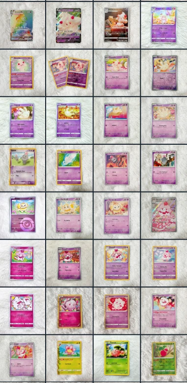
What stays the same
- One card per frame, shot straight on
- A white fur backdrop by default, and a themed set for themed drops
- Each drop sticks to a colour story
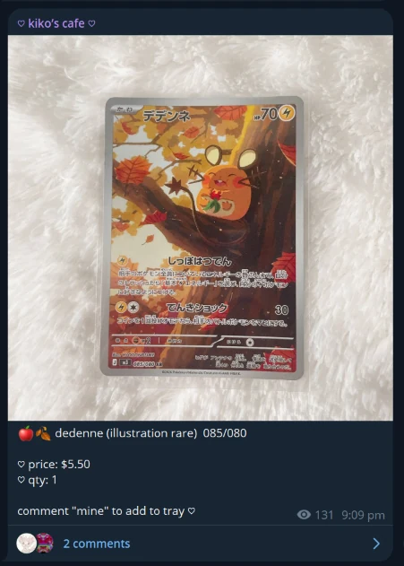
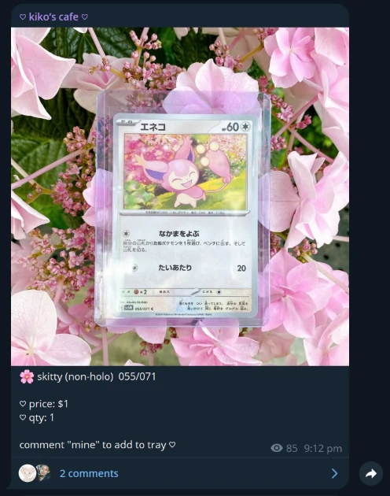
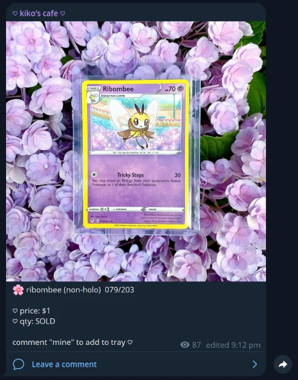
Every drop has a theme, and the shoot follows it
For the flower drop, we shot the cards at Gardens by the Bay beside the flowers in their art: Skitty in pink hydrangeas, Ribombee in lilac.
A $1 card has nothing to say on its own; matched to real flowers, it tells a story and gives the drop something to tease. It costs a shoot, but themed drops later earned about four times more.

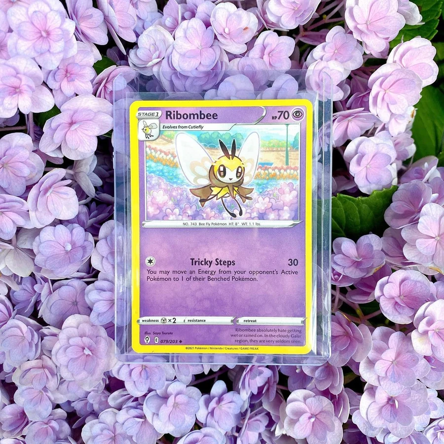
On the feed
Across both apps: 334 followers (189 Instagram, 145 TikTok) and 1,120 TikTok likes. Our top TikTok, a peek at my own Pokekyun collection, got 81 likes and 8 saves.
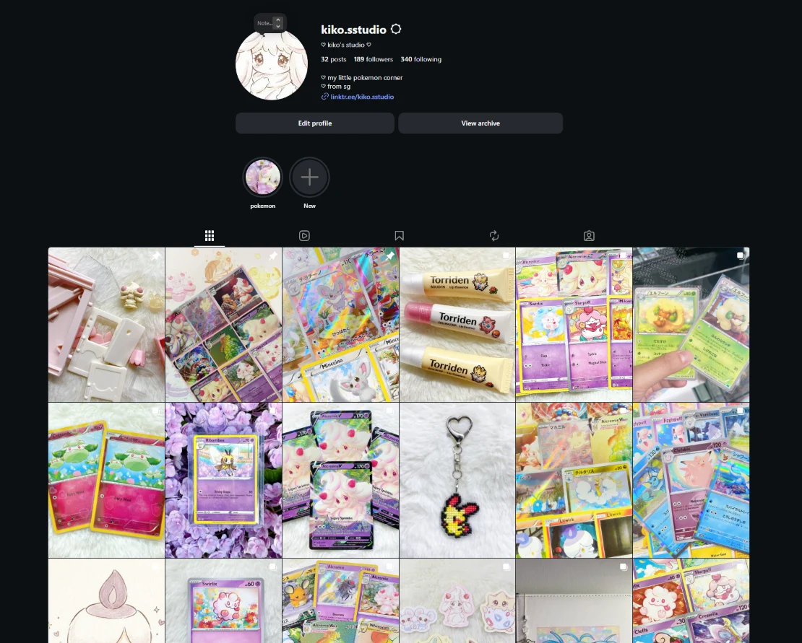
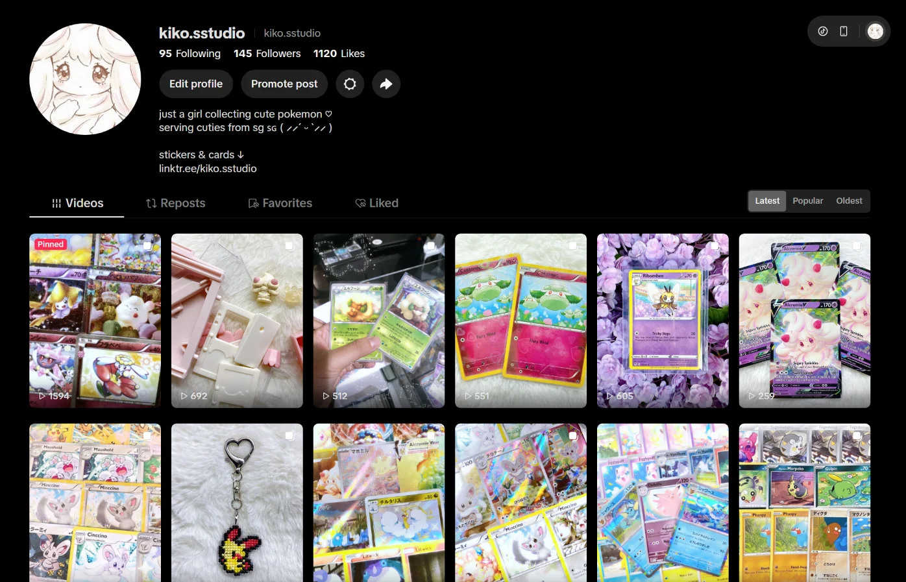
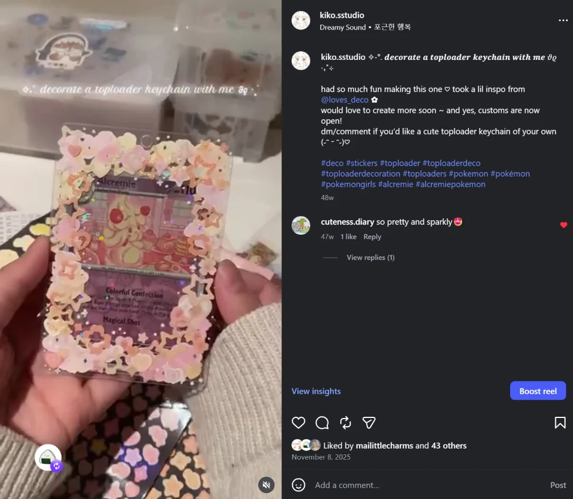
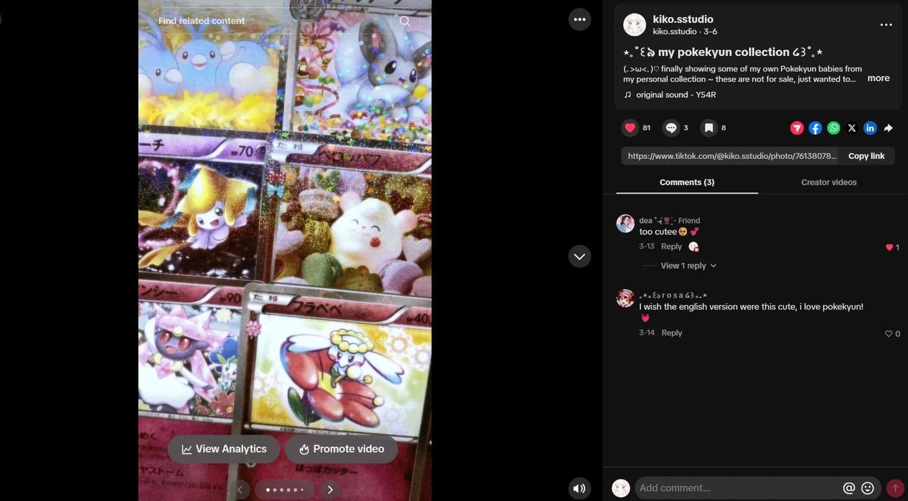
04 · Drop playbook
Tease, reveal, drop.
Drops are announced with a date and built up with teasers, so people know when to show up. The “sleepy cutie” drop opened with a Snorlax sneak peek a few days ahead.
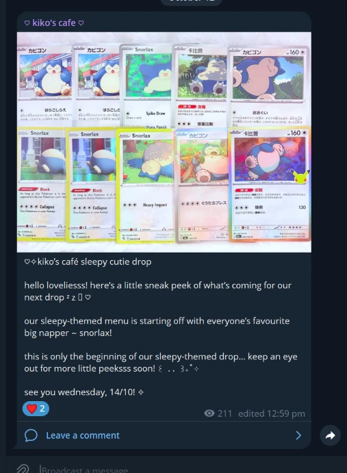
- TeaserOne hero Pokémon, the theme and the date
- More peeksA few more cards to keep the drop top of mind
- Drop dayFull listing at a set time; comment to claim
- AfterSold-out cards marked, so late visitors know what’s left
05 · Results
In the green, and we know why.
Since April: 19 drops, 1,086 cards, $1,778.40 in revenue. After stock, postage and consignor payouts, the shop is $842 in profit, a 47% margin. Weekly revenue held at about $45–70 from August to September.
Themes are the clearest lesson. Our best drops were themed: pink cuties pt 2 $103.90, pink cuties $92.70, rodent and fairy drops $79–86. The untitled early drops earned $23–25 each. Same audience, same prices: a theme made a drop worth about four times more.
What changed: every drop now gets a theme, a name, a teaser and a matching shoot.
06 · Running it on data
Every decision is backed by data.
Claims, sales and stock used to live in comments and notes. My partner built an admin site that tags every sale to its drop, tracks weekly revenue and reconciles real spend, including consignor payouts, so “profit” means real money.
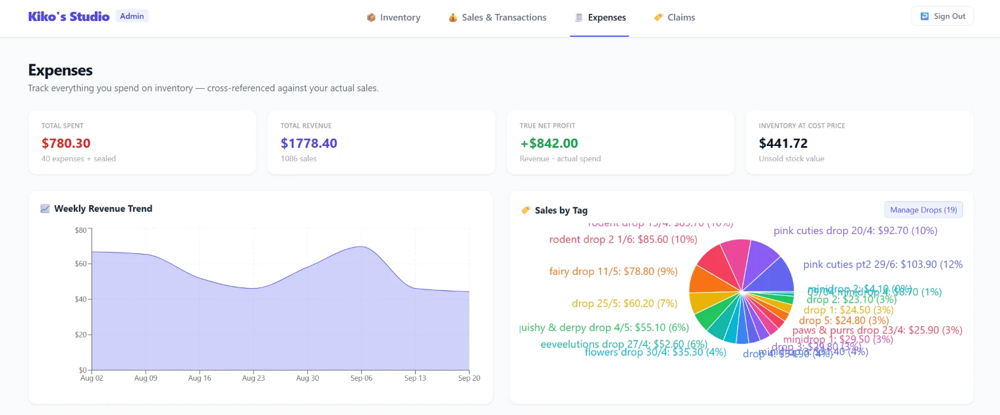
It also shows which sourcing pays off. Each buying trip has its own tag, so we can compare spend with what those cards earned. As the one picking cards, this tells me which themes and trips to repeat.
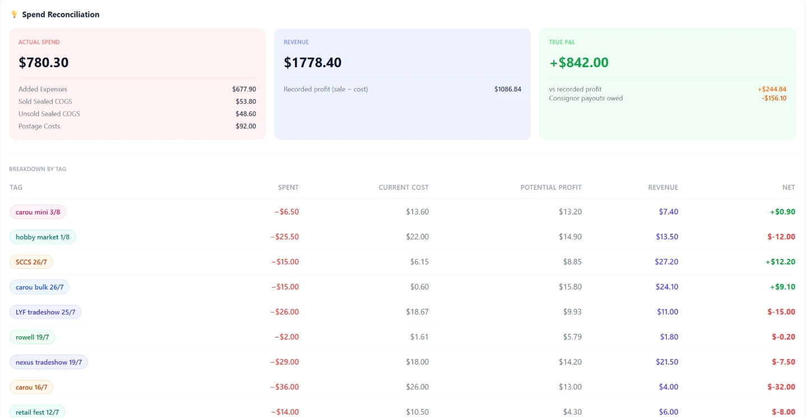
Trade-offs
The calls I made, and what they cost.
How do people buy?
Comment “mine” to claim, in Telegram (chosen)
Fast and exciting, like a live sale, with no checkout to build. Costs: claims have to be tracked by hand.
A web store with checkout (not chosen)
Tidier, but slower to set up and it loses the drop-night buzz.
How do we release stock?
Themed drops on a set date (chosen)
A theme gives us something to tease and a reason to show up. Cost: holding stock until it fits a theme.
List cards as they come in (not chosen)
Less planning, but nothing to announce, so each post gets less attention.
How should listings look?
One fixed format every time (chosen)
Buyers can scan a drop in seconds. Cost: less room to experiment per post.
Write each post freely (not chosen)
More personality per post, but harder to scan and easier to make mistakes.
07 · Fixing the bottleneck
Growth was blocked by manual work.
Claim-by-comment is exciting, but every claim and listing was logged by hand, and buyers scrolled through comments to see what was left. More customers would have meant more chaos, not more sales.
A browsing webpage would look nicer but wouldn’t remove the manual logging, so a bot that logs claims automatically came first. Next: a loyalty card with stamp tiers, so repeat buyers are rewarded without manual tracking. I also built a small Vue app to plan binder layouts with the Pokémon TCG API.
08 · What I’d test next
Questions I want data on.
Which themes win
Colour themes (pink cuties) or Pokémon types (rodents, fairies): which sells more per card listed?
Timing
Do evening drops sell out faster than lunchtime ones?
Loyalty
Once stamps launch, does the repeat-buyer rate go up?
One change and one number per test, so even “no difference” teaches us something.